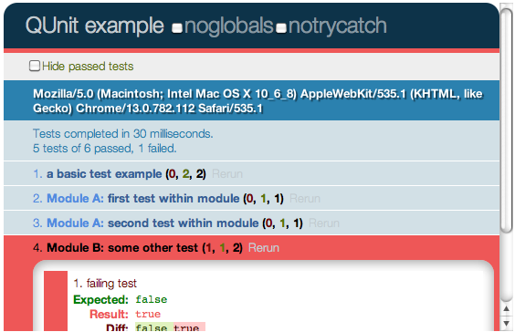

.js
A food for thought on all things JavaScript
by David RankinWhy?
- Installed on every desktop with a browser
- All smartphones (iPhone, Android, WinPhone 7, Blackberry ... even WinMob)
- And in all sorts of other places too (more on that later)
- You can't hide from it
- Spartan has adopted js with open arms
- JavaScript is actually a lovely powerful language (with some very nasty bits)
Something to ponder
Atwood's Law
- "If it can be written in Javascript, it will be written in Javascript."
... that includes Phalanx :)
What will we cover
- Some basic syntax and usages
- Things to be careful of (the bad parts)
- Good practices
- jQuery
- Testing
- Lots more if we have time (and I have the slides)
- Local storage, server side, templating, JSLint, PhoneGap, MVC frameworks, CouchDB, CoffeeScript...
But first, some background
- Initially called LiveScript (codename Mocha)
- Released as part of Netscape Navigator 2.0 in September 1995
- Renamed to JavaScript around the time of Java's launch
- Microsoft created it's own version, JScript, which lost (if it was ever competing)
- For a good while JavaScript was used for button mouseovers and other simple client-side features
>> Fast forward to today >>
- The speed of JavaScript has increased dramatically
- It is now the fastest dynamic language
- A field of intense innovation and growth
- Google's GMAIL is now over 400,000 lines of Javascript
Syntax
- JavaScript is a prototype-based, object-oriented scripting language that is dynamic, weakly typed and has first-class functions.
- C like syntax
// A function
/* with some comments (JavaScript 'The Good Parts' doesn't use this type) */
function factorial(n) {
if (n == 0) {
return 1;
}
return n * factorial(n - 1);
}
'c' + "a" + 't' === "cat"
Reflecting on a Bag of State
- A JavaScript object is just an unordered collection of key value pairs (if not a primitive like
intorbool) with some syntactic sugar for accessing the values.
var presentation = { "name":"Javascript", slides:99 };
presentation.name; // returns "JavaScript"
presentation["slides"]; // returns 99
presentation.rating = function() { return "awsome!" };
presentation.rating(); // returns "awsome!", as it should
presentation["rating"](); // also "awsome!"
presentation.badFeedback; // returns undefined
presentation.hateMail.sender; // so unthinkable it will throw
for(name in presentation) {
if(typeof presentation[name] !== 'function') {
document.writeln(name + ':' + presentation[name]);
}
}
Funcy
- Functions are first class entities in JavaScript
- Pass them around as you would an object - because they are!
- Different ways to call a function: method, function, constructor,
apply,call
function product(a,b) { return a*b; }
$.post('ajax/test.html', function(data) {
$('.result').html(data);
});
var arrayMaker = {
someProperty: 'some value here',
make: function (arg1, arg2) {
return [ this, arg1, arg2 ];
}
};
var gasGuzzler = { year: 2008, model: 'Dodge Bailout' };
makeArray.apply( gasGuzzler, [ 'one', 'two' ] );
// => [ gasGuzzler, 'one' , 'two' ]
makeArray.call( gasGuzzler, 'one', 'two' );
// => [ gasGuzzler, 'one' , 'two' ]
Prototyping & Inheritance
- JavaScript is class-less and instead is prototype based.
- Objects 'inherit' from
Objectdirectly - Every object, bar one, has a prototype (which is just another object)
- Prototypes are commonly misunderstood (especially by me), but the most important thing to remember is - it's not class inheritance, so don't think it is.
- Point to Note - JavaScript makes no distinction between a constructor and other functions
Getting a prototype
- A prototype is an object from which other objects inherit properties
- The prototype's methods are inherited by the 'child' object
var a = {};
//Firefox 3.6 and Chrome 5 (ECMA 5 standard)
Object.getPrototypeOf(a); //[object Object]
//Firefox 3.6, Chrome 5 and Safari 4
a.__proto__; //[object Object]
//all browsers
a.constructor.prototype; //[object Object]
'Classical' Inheritance
- You can use prototypes to mimic classical inheritance (to a point)
// Constructor.this is returned as new object and its internal [[prototype]] property will be set to the constructor's default prototype property
var Circle = function(radius) {
this.radius = radius;
//next line is implicit, added for illustration only
//this.__proto__ = Circle.prototype;
}
// augment Circle's default prototype property thereby augmenting
// the prototype of each generated instance
Circle.prototype.area = function() {
return Math.PI*this.radius*this.radius;
}
// create two instances of a circle and make each leverage
// the common prototype
var a = new Circle(3), b = new Circle(4);
a.area().toFixed(2); //28.27
b.area().toFixed(2); //50.27
Alter prototypes
- JavaScript is dynamic, so you can open up "classes" (really prototypes) and modify them.
- Prototypical inheritance is not a player when setting property values.
String.prototype.times = function(count) {
return count < 1 ? '' : new Array(count + 1).join(this);
}
"hello!".times(3); //"hello!hello!hello!";
"please...".times(6); //"please...please...please...please...please...please..."
More Prototype mods
- Worth remembering they ain't classes but just refs to objects
var A = function(name) {
this.name = name;
}
var a = new A('alpha');
a.name; //'alpha'
A.prototype.x = 23;
a.x; //23
// BUT...
var b = new B('beta');
b.name; //'beta'
B.prototype = {x:23};
b.x; //null
Some bad/odd bits
- Global scope
- Semicolon Insertion
- Falsy Values
- Arrays
- The 'this' keyword
Global == BAD!! (or should that be ===)
- No namespace system, managing dependencies between code is a nightmare
- By default scope is Global so use the var keyword!
// GLOBAL (1): place the var statement outside of any function var foo = "value"; // GLOBAL (2): Add a property to a global object. window.foo = "value"; // GLOBAL (3): Implied global variables. foo = "value";
Hiding your private parts in public
- There are techniques to make things private.
MyObject = function(){
var privateMethod = function(){ /* do stuff */ };
var obj = {
publicProperty:5,
publicMethod:function(){ /* do stuff */ };
};
return obj;
}(); // run it right away
Semicolon Insertion
- The semicolon is required by JavaScript...
- .. but it has a mechanism that tries to correct missing ;
return
a + b;
// Returns undefined. Treated as:
// return;
// a + b;
//But:
a = b + c
(d + e).foo()
// Treated as:
// a = b + c(d + e).foo();
// This is why you always put the { on the same line
return
{
status: true;
}
Falsy Values and ===
- JavaScript has a lot of false values:
0, NaN, '' [empty string], false, null, undefined - JavaScript has two sets of equality operators
=== !==and== != - Use
===and!==because they work as you expect
'' == '0' /* false */ '0' == '' /* true */ 0 == '0' /* true */ false == 'false' /* false */ false == '0' /* true */ false == undefined /* false */ false == null /* false */ null == undefined /* true */ '\t\r\n' == 0 /* true */ // Use === and !== '' === '0' /* false */ false === '0' /* false */ null === undefined /* false */
Arrays
- JavaScript doesn't have real arrays
- Arrays are implemented through the use of a object prototype
- This means performance is not as good as you would expect from an Array
typeofwill return 'object' for Array 'instances'- Because they are just object you can add all sorts to them, but typically you add properties with integer names
var a = ['one', 2]; a.length; // 2 a[0]; // returns "one" a[3] = 'three'; a.crazy = "don't you love dynamic";
The 'this' Keyword
- An awsome framwork for simplifying DOM manipulations cross browser
- Released in 2006 at BarCamp by the js god John Resig
- Used by over 46% of the 10,000 most visited websites
- jQuery is the first open source project Microsoft provides support for that it didn't write
Example
$(document).ready(function() {
$("div.test").add("p.quote").addClass("blue").slideDown("slow");
$.ajax({
type : "POST",
url : "example.php",
data : "name=David&location=Glasgow",
success : function(msg){
alert( "Data Saved: " + msg );
}
});
});
jQuery plugins and other projects
- jQuery has a framework for adding plugins
- There is often a jQuery plugin to do what you want
- jQuery create plugins for dev functionality not yet ready for trunk
- jQuery UI provides an abstraction for animation, advanced effects and high-level, themeable widgets, built on top of jQuery
- Our Portal web
processis in fact a jQuery UI plugin.
Testing
- Testing is JavaScript is not simple.
- You can only unit test JavaScript that does not manipulate the DOM
- How do you run a JavaScript test?
- Two framworks worth mentioning
- QUnit - http://docs.jquery.com/Qunit
- Jasmine - http://pivotal.github.com/jasmine/
QUnit
- Created to support the jQuery codebase
- Now supported by Resharper 6
test("a basic test example", function() {
ok( true, "this test is fine" );
var value = "hello";
equal( value, "hello", "We expect value to be hello" );
});
module("Module A");
test("first test within module", function() {
ok( true, "all pass" );
});
test("second test within module", function() {
ok( true, "all pass" );
});
module("Module B");
test("some other test", function() {
expect(2);
equal( true, false, "failing test" );
equal( true, true, "passing test" );
});
Qunit Results

QUnit - a test suite
<!DOCTYPE>
<html>
<head>
<script src="http://code.jquery.com/jquery-latest.js"></script>
<link rel="stylesheet" href="http://code.jquery.com/qunit/git/qunit.css" type="text/css" media="screen" />
<script type="text/javascript" src="http://code.jquery.com/qunit/git/qunit.js"></script>
<script>
$(document).ready(function(){
test("a basic test example", function() {
ok( true, "this test is fine" );
var value = "hello";
equal( value, "hello", "We expect value to be hello" );
});
module("Module A");
test("first test within module", function() {
ok( true, "all pass" );
});
test("second test within module", function() {
ok( true, "all pass" );
});
module("Module B");
test("some other test", function() {
expect(2);
equal( true, false, "failing test" );
equal( true, true, "passing test" );
});
});
</script>
</head>
<body>
<h1 id="qunit-header">QUnit example</h1>
<h2 id="qunit-banner"></h2>
<div id="qunit-testrunner-toolbar"></div>
<h2 id="qunit-userAgent"></h2>
<ol id="qunit-tests"></ol>
<div id="qunit-fixture">test markup, will be hidden</div>
</body>
</html>
Jasmine
- Behaviour Driven testing in JavaScript
describe("Jasmine", function() {
it("makes testing JavaScript awesome!", function() {
expect(yourCode).toBeLotsBetter();
});
});
Local Storage
Server Side
- One language on both server and client
- There are now real JavaScript contenders
- Allows for browser-less tests, lightweight servers and fast dynamic programs


Rhino
node.js
Templating
mustache
$.tmpl()
The End
- Thanks!
- This presentation was written in Fathom.js
- The best practices came from Opera's JavaScript best practices
- Code styling provided by Google's Prettify
- Prototype examples taken from a random blog
- You should read "JavaScript:The Good Parts", by Douglas Crockford
- Most of this presentation was nicked from Wikipedia or John.